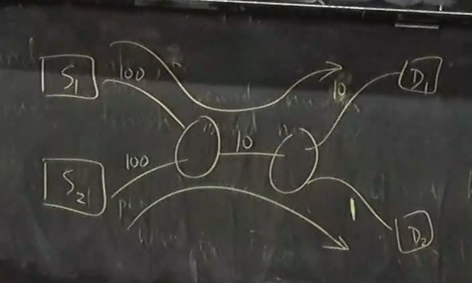

Router Scheduling
- How do network providers figure out which packets to send to enforce things like how much people are paying bandwidth
- For the first part, we will talk about maximum fairness, which is a way of measuring fairness
- Depending on the problem, we might use other kinds of fairness that we will talk about later
- Isolation:
- If we all pay the same amount, it doesn't matter what other people do, we should all get the same amount if we are all offering load
- Two algorithms:
- Fair queuing
- Defecit round robin
- This is simpler to implement but has less guarantees
Fair Queueing
Maximum Fairness
- Suppose we have n customers, each offering a load of a1,a2,…,an bits / sec
- The link capacity is μ
- Suppose a={2,3,4,5} and μ=10
- You could give everyone 2.5, but then you are not using up all of it
- You could give everyone 10/14 of what they wanted, but then you don't have isolation
- I.e. think about what hapens if the last person asks for 5000 instead
- Max min = of all possible allocations that add up to 10, give the one that makes the minimum the largest
- After you remove the minimum, this property should still hold for everyone else
- An allocation method that satisfies this:
- Take the min allocation and try to give it to everyone
- Then subtract that from everone's and try it again
- If there isn't enough to give it to everyone, equally distribute the remaining among everyone
- There are other allocations that satisfy this for maybe the smallest, but not once you apply this rule recursively
Users
- How does a router determine what is a user?
- They can do things like look at the destination address or source address (maybe look at port too)
- After doing this, they put all of a user's packets in a queue, and now we obly think about queues
- However, typically routers have a limited number of queues they can use
- So they typically hash the user coming in to get which queue to put them in (stochastic fair queueing)
- Easier to build fast hardware with a fixed number of queues
Queues
- Queue with packets = backlogged queue
- Queue without = inactive / empty queue
- Round robin algorithm:
- Start with the first queue, send its packet, and then go on
- This doesn't consider packet sizes, which can vary from 40 bytes to 1500 bytes
- Instead, we want to emulate a round robin that could send things bit by bit
- This would implement maximum fairness since we are basically just doing what we described earlier
- Emulating bit by bit round robin:
- We want to figure out which one bit by bit would have finished sending first
- We keep this idea of a "round number" which is basically a virtual clock
- Each packet will be assigned a start round number and an end round number
- End round number = start round number + number of bits in the packet
- When we get a new packet, we assign it with a start round number of:
- Max of the previous packet in queue's finish round number and the current round number
- We go through each of our queues and send the packet with the lowest finish round number
- An aside: using earliest start round number instead of finish round number is also an acceptable way of implementing fair queueing!
- Actually implementing this in hardware has a number of key points, but the main idea is that there is work done to make it faster by keeping approximate round numbers
Guarantees
- Delay Bound:
- Assume we have a (σ,ρ) source of data:
- This means that in any duration τ, the number of bits sent to us is at most στ+ρ
- Idea is that this is the maximum consistent rate coming in, but we allow for some burst
- This is known as a token-bucket specification
- Under this assumption, there is a theorem that gives a guarantee on the delay for a specific packet
End to End Congestion Control
- If every router does this, do we still need e2e?
- It is worth using the e2e so that you can adapt to the current network conditions
- Otherwise if you just keep sending too much then you will just get drops upon drops
- Even beyond this, you actually need e2e congestion control to run entworks with maximum efficiency
- Suppose we had S1 sending to D1 and S2 sending to D2 along the same link

- The correct answer would be to allocate 9 to S1 and 1 to S2
- However the fair queueing alone would just give you 5 and 5 for both sources
Defecit Round Robin
- Attempts to get rid of some of the difficulties of implementation
- Fair queuing has a very rigid way of defining excactly the order packets are sent in
- This allows us to develop delay bounds
- We attempt to relax that to ease implementation
- Provides no delay guarantee, only bandwidth guarantees
- Each of your active queues will "accumualate credits"
- Each timestep, accumulate total bandwidth / number of active queues
- We then look at which queue has enough accumulated credits to send the next packet in its queue
- If it is, send the packet and decrease the accumulated credits